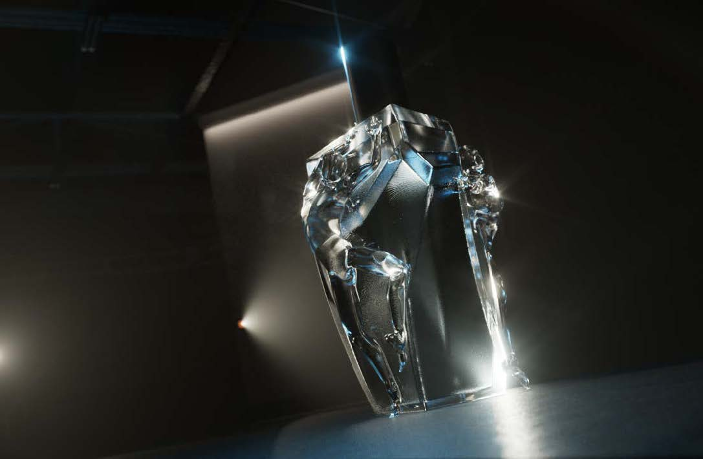

Das Ziel dieser Arbeit war ein konzeptionelles Design und Packshot- Rendering einer Parfümflasche zu erstellen. Die Bildwelt und Inszenierung soll die New Yorker Ballszene der 1970er Jahre aufgreifen.

Durch die Anpassung von AOVs (Arbitrary Output Variables) mit Redshift war es möglich, die Szene durch das gezielte Auslassen der Emission und Reflektion mancher Lichter so zu beeinflussen, dass bestimmte Farbakzente durch Rimlighting erzielt werden konnten, ohne die Lichter andere Strukturen beeinflussen zu lassen, oder im Gegenteil Scheinwerfer-artige Objekte darzustellen, die keinerlei Einfluss auf die Beleuchtung haben. Dadurch konnte die Art Direction sehr exakt gesteuert werden, was mit reeller Fotografie nicht unbedingt möglich wäre.